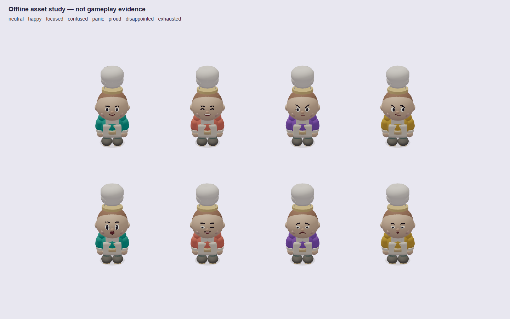
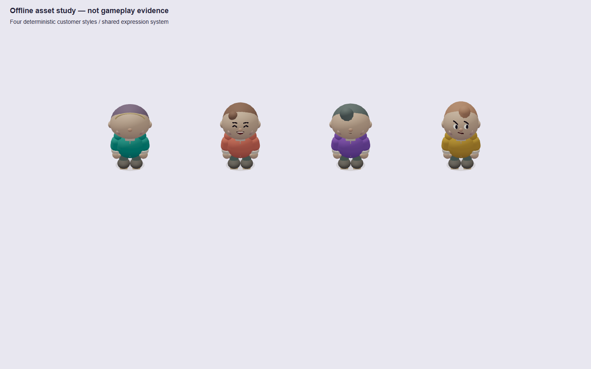
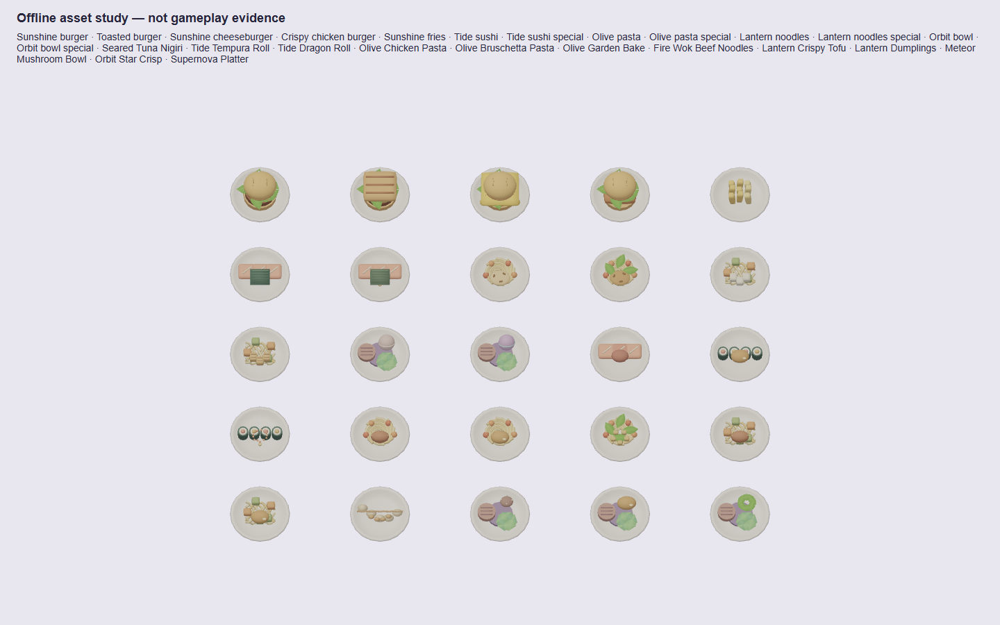

Real production-browser kitchen screenshots. Left: final Pass 2 build; right: Pass 3. Balanced, Reduced Motion and the same first restaurant level. Portrait and landscape retain their framing; the 1920×1080 touch profile changes camera framing to keep the station row below the desktop HUD. Chromium SwiftShader is not iPhone/Safari evidence or a mobile GPU benchmark.
Open before at full size · Open after at full size
Before is the final Pass 2 production build; after is Pass 3. Same first levels, viewport and Reduced Motion. Live customer/timer states can differ; these are not exact replay frames. Portrait/landscape views use touch profiles. At 1920×1080 the post-change camera uses the wide-screen overview profile to avoid HUD occlusion; that pair is not a same-camera art comparison. No native Safari or phone heat certification.
These inspection sheets use the same chef/customer/food functions as the live game. They do not invent server snapshots or establish a cooking/multiplayer victory. Pass 2 face, customer and food sheets are preserved as the baseline. The new full equipment sheet has no matching pre-change full sheet; the live board close-ups show each venue's current surface treatment.



Tests, render cost and iPhone check · Internal quality assessment and missing work · Character handoff